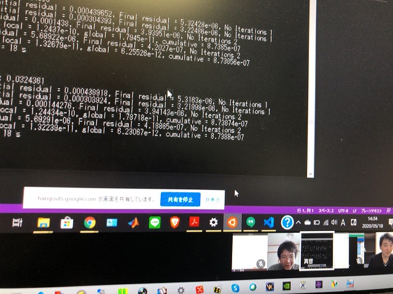

| ・ SSD (R02.05.18) | |||
流体の実験できないので、OpenFOAMという数値流体ソルバーで計算が盛んになっています。3年前から利用は始まりましたが昨年末から年明けの講座と流体以外のテーマのユーザーも増えています。 実験ではあまり境界条件を意識しないのですが、計算では非常に大事ということを実感しています。流体の理解も深くなり非常に良いです。研究室のサーバーで計算して結果をSSDで郵送というやりとりが始まりました。TB転送するより郵送の方が早いという判断。 |
|||
|
B4K野さんの相談をみんなで乗っています |

無事に動きました | ||
|
京都の准教授の人から大阪のM2I田さんへ |
追加の計算開始 | ||